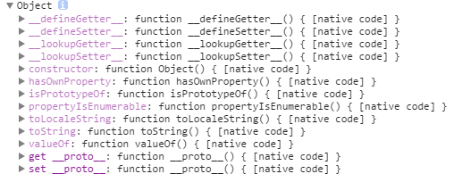
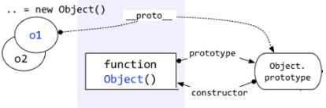
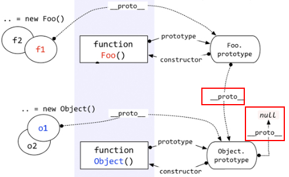
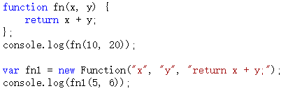
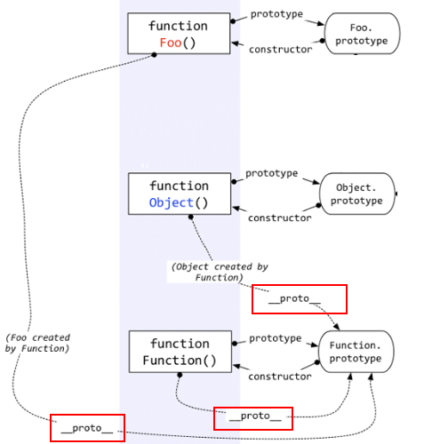
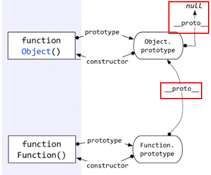

隐式原型
注意：本文不是javascript基础教程，如果你没有接触过原型的基本知识，应该先去了解一下，推荐看《javascript高级程序设计（第三版）》第6章：面向对象的程序设计。
上节已经提到，每个函数function都有一个prototype，即原型。这里再加一句话——每个对象都有一个proto，可成为隐式原型。
这个proto是一个隐藏的属性，javascript不希望开发者用到这个属性值，有的低版本浏览器甚至不支持这个属性值。所以你在Visual Studio 2012这样很高级很智能的编辑器中，都不会有proto(两个下划线)的智能提示，但是你不用管它，直接写出来就是了。
var obj = {};
console.log(obj.__proto__);

上面截图看来，obj.proto和Object.prototype的属性一样！这么巧！
答案就是一样。
obj这个对象本质上是被Object函数创建的，因此obj.proto=== Object.prototype。我们可以用一个图来表示。

即，每个对象都有一个proto属性，指向创建该对象的函数的prototype。
那么上图中的“Object prototype”也是一个对象，它的proto指向哪里？
好问题！
在说明“Object prototype”之前，先说一下自定义函数的prototype。自定义函数的prototype本质上就是和 var obj = {} 是一样的，都是被Object创建，所以它的proto指向的就是Object.prototype。
但是Object.prototype确实一个特例——它的proto指向的是null，切记切记！

还有——函数也是一种对象，函数也有proto吗？
又一个好问题！——当然有。
函数也不是从石头缝里蹦出来的，函数也是被创建出来的。谁创建了函数呢？——Function——注意这个大写的“F”。
且看如下代码。

以上代码中，第一种方式是比较传统的函数创建方式，第二种是用new Functoin创建。
首先根本不推荐用第二种方式。
这里只是向大家演示，函数是被Function创建的。
好了，根据上面说的一句话——对象的proto指向的是创建它的函数的prototype，就会出现：Object.proto === Function.prototype。用一个图来表示。

上图中，很明显的标出了：自定义函数Foo.proto指向Function.prototype，Object.proto指向Function.prototype，唉，怎么还有一个……Function.proto指向Function.prototype？这不成了循环引用了？
对！是一个环形结构。
其实稍微想一下就明白了。Function也是一个函数，函数是一种对象，也有proto属性。既然是函数，那么它一定是被Function创建。所以——Function是被自身创建的。所以它的proto指向了自身的Prototype。
篇幅不少了，估计也都看烦了。快结束了。
最后一个问题：Function.prototype指向的对象，它的proto是不是也指向Object.prototype？
答案是肯定的。因为Function.prototype指向的对象也是一个普通的被Object创建的对象，所以也遵循基本的规则。

OK 本节结束，是不是很乱？
乱很正常。那这一节就让它先乱着，下一节我们将请另一个老朋友来帮忙，把它理清楚。这位老朋友就是——instanceof。
具体内容，请看下节分解。